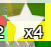

In bee swarm simulator, there are many types of bees, and rarities. These rarities include common, rare, epic, legendary, mythic, and event bees. These bees will give honey and protect you from bosses and mobs located aroudn the map. The best bees for attacking would be red colored bees, vicious bee, and lion bee. The best color hive for macroing would be blue, while the best for attacking would be red hive since it has more attack.
Gifted Bees gift different abilities, depending on which bee is gifted. For example, one of the best bees to gift is Photon bee, since the beamstorm ability auto converts the honey from the beamstorm when gifted. Some of the best gifted bees are...
These Bees will allow you to get many good bonuses. Another important fact you need to know is that gifted bees have a chance of dropping an inspire token (Image From My Friend Gavin Reese) which will grant 2x pollen for 10 seconds.
Image by Onett in the Bee Swarm Wiki